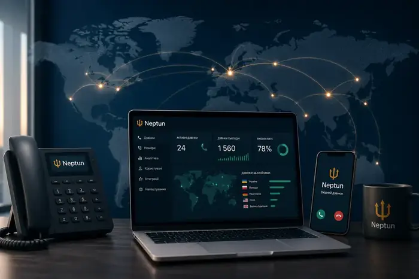

Neptun
Neptun Як підключити
Як підключити Можливості та функції
Можливості та функції Віртуальні номери
Віртуальні номери Інтеграції з CRM
Інтеграції з CRM Тарифи на віртуальну АТС
Тарифи на віртуальну АТС Номери, які підвищують довіру клієнтів
Номери, які підвищують довіру клієнтів Номери з SMS, API та автоматизацією
Номери з SMS, API та автоматизацією Для колл-центрів та вихідних кампаній
Для колл-центрів та вихідних кампанійIP-телефонія для міжнародного бізнесу: як організувати дзвінки в різних країнах

Один бізнес — десятки ринків
Коли компанія виходить на міжнародні ринки, телефонія швидко стає окремим завданням.
Потрібні номери різних країн. Потрібно розподіляти дзвінки. Потрібно контролювати менеджерів. Потрібно бачити статистику. І бажано керувати всім з одного середовища.
Саме тут IP-телефонія стає особливо корисною.
Що дає міжнародна IP-телефонія?
- Віртуальні номери — компанія може використовувати номери різних країн без окремої інфраструктури для кожного ринку
- Єдина система для команди — менеджери працюють в одній телефонній системі незалежно від місцезнаходження
- Маршрутизація — дзвінок із конкретного ринку можна направити відповідному менеджеру або команді
- CRM — історію комунікації можна пов’язувати з клієнтськими даними
- Аналітика — керівник бачить результати за командами, номерами, напрямами та періодами
Коли бізнесу варто переходити на IP-телефонію?
Коли компанія:
- виходить на нові країни
- має міжнародний відділ продажів
- працює віддалено
- використовує CRM
- має багато менеджерів
- активно масштабує outbound
- хоче централізувати телефонію
Єдиний центр управління комунікаціями
Міжнародний бізнес не повинен мати десятки розрізнених телефонних систем.
Саме таку логіку Neptun закладає у свою екосистему: віртуальні номери + віртуальна АТС + Smart Calls + автодайлер + HLR + AI-дзвінки + аналітика.
Хочете так само у своєму бізнесі?
Підключення за 15 хвилин, без документів і KYC.
Отримати консультацію →Інші статті за темою

Віртуальна АТС для бізнесу: що це, як працює та навіщо вона відділу продажів
Якщо у компанії вже не один менеджер, десятки або сотні дзвінків на день, кілька рекламних каналів та CRM, звичайного мобільного телефону стає недостатньо.


Як не втрачати лідів через пропущені дзвінки: 7 проблем відділу продажів
Клієнт залишив заявку. Менеджер не відповів. Що робить клієнт? У більшості випадків — телефонує конкуренту.

Автодайлер для відділу продажів: як менеджерам робити більше дзвінків
Знайти номер → скопіювати → вставити → набрати → почекати → почути «зайнято» → записати результат. І так сотні разів. Це не продажі, це ручна робота.